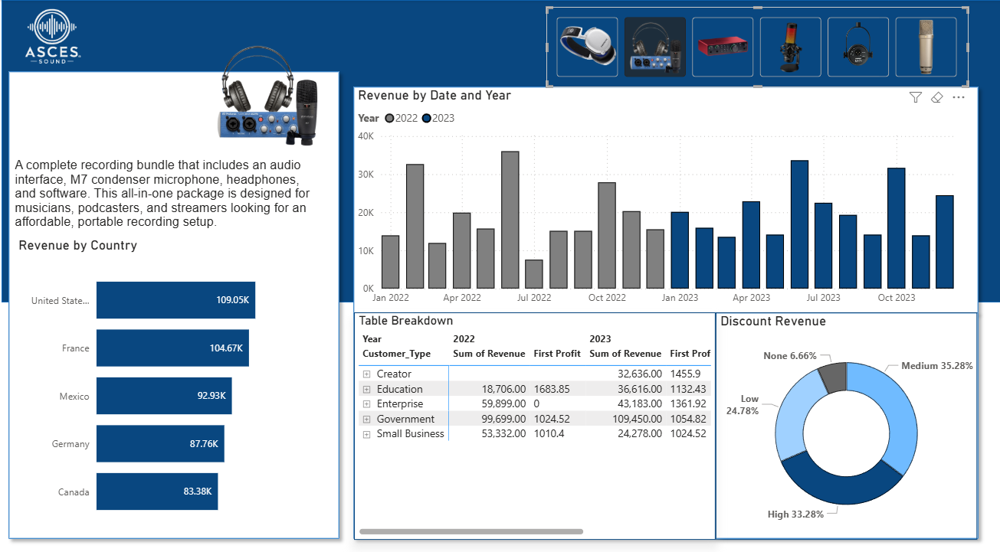

Product Analytics Database & Dashboard
Introduction:
I built a full end to end sales analytics solution by creating a custom relational database in SQL Server from three source tables, joining them with SQL queries, and importing the model into Power BI. The resulting dashboard tracks revenue by product, country, customer segment, and discount level over time, letting users explore performance by year, customer type, and product bundle.
Picture of Dashboard: 
Conclusions:
The dashboard highlights key booking, revenue, distance, and rating patterns across vehicles, riders, locations, and time.
- The dashboard surfaces key revenue, product, customer, and discount patterns across countries and years.
- Analyzed monthly revenue trends across 2022 and 2023 to spot seasonality and growth in demand.
- Built the underlying model by joining three SQL Server tables, then visualized the integrated dataset in Power BI for flexible exploration.
Through this project, I strengthened my skills in SQL data modeling and Power BI dashboard design to analyze sales performance from multiple angles.